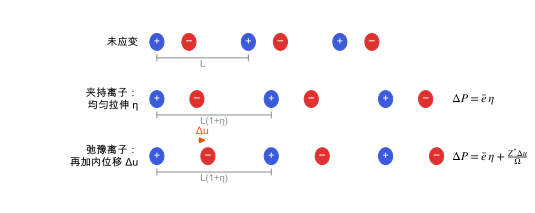

压电张量
e 与 d 两种约定、夹持离子项与内应变项，以及哪些点群允许压电。
直观阅读需要
- 应变、应力、极化的物理含义
- 从能量到结构与响应 里“响应是能量的二阶导数”
完整推导还需要
- 张量与坐标变换 的指标记号与坐标变换
- 弹性张量 与 介电张量与玻恩有效电荷
只是提示，不需要先读完才能往下看。
直觉直观解释
压电描述的是应变和极化之间的线性耦合：拉伸或剪切晶体，晶体宏观极化改变；反过来，加电场，晶体变形。两个方向由同一组材料常数描述（热力学上是同一个能量的混合二阶导数）。
一个晶体只有在没有对称中心时才可能压电。直观理由：对称中心把 P 变成 -P，却把应变 \eta 变成它自己；如果 \Delta P = e\,\eta 对两边都成立，只能 e = 0。
在分子晶体里，极化变化有两个来源：
- 分子和电子云随晶胞一起均匀变形（夹持离子，clamped-ion）；
- 分子在晶胞里重新转动、平移、氢键重排（内应变 internal strain 引起的离子弛豫）。
对 β-甘氨酸这类软的氢键晶体，第 2 项通常是主要部分，这也是它对计算细节敏感的原因（见 从能量到结构与响应 的“软方向放大误差”）。

| 符号 | 是什么 | 图里对应 |
|---|---|---|
| L | 未应变的晶胞长度 | 第一行灰色括号 |
| \eta | 均匀应变 | 第二行晶胞变为 L(1+\eta) |
| \Delta u | 应变后亚晶格（正、负离子）之间的相对内位移 | 第三行橙色箭头 |
| \bar e | 夹持离子压电系数：原子保持分数坐标不变时的响应 | 第二行的 \Delta P |
| Z^{*} | 玻恩有效电荷：单位位移带来的偶极变化 | 第三行附加项的系数 |
| \Omega | 晶胞体积 | 第三行公式分母 |
定义与公式数学与推导
两者通过恒电场下的弹性柔顺系数 s^{E}（或刚度 C^{E} = (s^{E})^{-1}）联系 [IEEE Std 176]：
其中求和遍历 6 个 Voigt 分量。计算通常先得到 e，再借助弹性张量换成实验常报告的 d。
夹持离子项与内应变项
令 u_{m} 表示原子坐标（m 同时标记原子和方向）。应变改变晶胞时，原子先按分数坐标跟随（夹持），再在新的晶胞里弛豫到能量极小。对总极化求全导数 [Wu, Vanderbilt & Hamann 2005]：
其中 \bar e 是夹持离子压电张量；\Omega 是晶胞体积；Z^{*}_{m\alpha} 是玻恩有效电荷（原子位移 u_m 引起的偶极 \alpha 分量变化，见 介电张量与玻恩有效电荷）；K 是去掉三个平移零模后的力常数矩阵；\Lambda_{nj} = -\partial^{2}E/\partial u_n\,\partial\eta_j 是内应变张量，也就是应变在原子上产生的力。
对称性怎样限制分量
压电张量是三阶极张量，必须在晶体点群的每个操作下不变。32 个晶体学点群里，11 个有对称中心，压电张量全为零；剩下 21 个中，点群 432 的对称性也使它全为零，所以 20 个点群允许压电（晶体物理教材中的共识结论）。分量的具体零化模式见 晶体对称性与空间群。
在本研究线里的样子对应与边界
- 目标量：β-甘氨酸（空间群 P2_1，点群 2）的剪切分量 d_{16}。按点群 2 的选择定则，d_{16} 是允许的非零分量之一；它把 xy 剪切和 x 方向极化联系起来。轴的命名（哪个是二重轴、单斜角在哪个平面）要和所用晶体学设置一致，换设置后下标会改变。
- VASP 里的对应：
LEPSILON = .TRUE.用微扰方法给出夹持离子的压电张量和玻恩电荷；离子弛豫部分要结合力常数和内应变（IBRION = 6或7/8等）得到 [VASP Wiki: LEPSILON]。两种做法的区别和一致性条件见 有限差分与微扰方法。 - 单位换算：VASP 输出的 e 是 C/m²；换算 d 时需要同一套计算得到的弹性张量（弛豫离子、恒电场），见 弹性张量。
- 和实验比较：已有工作报告了氨基酸晶体压电的计算与测量对比 [Guerin 2018]；本条目尚未阅读其细节，不在这里引用它的数值。
常见坑对应与边界
- e 和 d 混用：d 包含弹性柔顺系数，软晶体里 d 可以很大而 e 并不大。比较文献数值前先确认是哪一个。
- 只算了夹持离子项：只开
LEPSILON得到的是 \bar e；对分子晶体，漏掉内应变项可能连量级都不对。 - Voigt 次序不一致：不同程序的剪切分量顺序可能不同（例如 xy, yz, zx 与 yz, xz, xy）。下标 4、5、6 对应哪个剪切方向，要以输出文件的说明为准，并在换算 d 时和弹性张量保持同一顺序。
- 剪切应变的因子 2：工程剪切应变 \gamma_{xy} = 2\eta_{xy}。Voigt 记号里 \eta_6 取哪一个，直接影响 e_{\alpha 6} 差两倍。
- 晶体学设置与笛卡尔坐标的对应：单斜晶系的二重轴选 b 还是 c，以及笛卡尔 x 轴沿哪条晶轴，都会改变“d_{16}”指的是哪个物理分量。
检验自己对应与边界
参考资料
官方文档IEEE Std 176
IEEE Standard on Piezoelectricity, ANSI/IEEE Std 176-1987
尚未实际查阅，目前只是拟查阅书目
论文Wu, Vanderbilt & Hamann 2005
尚未实际查阅，目前只是拟查阅书目
论文King-Smith & Vanderbilt 1993
尚未实际查阅，目前只是拟查阅书目
官方文档VASP Wiki: LEPSILON
VASP Wiki, LEPSILON（线性响应计算介电与压电张量）
尚未实际查阅，目前只是拟查阅书目
论文Guerin 2018
作为“向外迁移”方向的应用实例候选，尚未阅读，不在正文中引用其结论。
尚未实际查阅，目前只是拟查阅书目
分类响应与张量性质 · 概念 · 研究线：压电与响应计算 · 状态：草稿